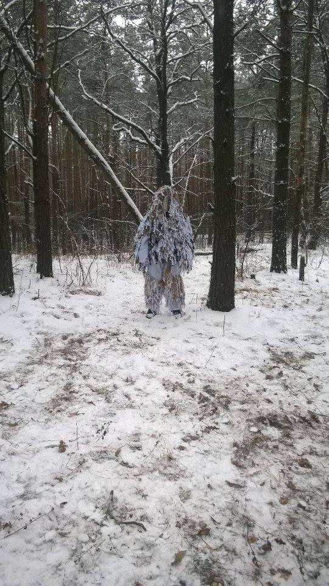

Волонтерська група "Кікіморушки Києва"
Головна
Наші будні
Звіт
Потреби
Наша команда
Контакти
Контакти
Волонтерська група
"Кікіморушки Києва"
Наталія

Адреса:
м.Київ, вул. Бажова, буд.12
Контактний телефон (viber):
(097)000-00-00 (093)000-00-08
Сторінка у facebook Ната
Перейти>>
Можете допомогти? Долучайтесь!
Картка
Як нас знайти
embedgooglemaps DE
http://iamsterdamcard.it/